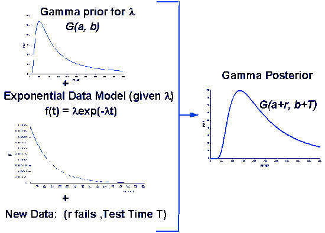
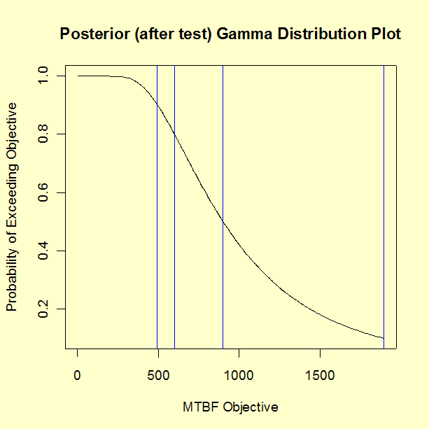

|
8.
Assessing Product Reliability
8.4. Reliability Data Analysis
|
|||||||||
| The Bayesian paradigm was introduced in Section 1 and Section 2 described the assumptions underlying the gamma/exponential system model (including several methods to transform prior data and engineering judgment into gamma prior parameters "\(a\)" and "\(b\)"). Finally, we saw in Section 3 how to use this Bayesian system model to calculate the required test time needed to confirm a system MTBF at a given confidence level. | |||||||||
| Review of Bayesian procedure for the gamma exponential system model |
The goal of Bayesian reliability procedures is to obtain as accurate a
posterior distribution as possible, and then use this distribution to
calculate failure rate (or MTBF) estimates with confidence intervals (called
credibility intervals by Bayesians). The figure below summarizes the
steps in this process.
 |
||||||||
| How to estimate the MTBF with bounds, based on the posterior distribution |
Once the test has been run, and \(r\)
failures observed, the posterior gamma parameters are:
$$ a' = a + r, \,\,\,\,\, b' = b + T \, , $$
and a (median) estimate for the MTBF is calculated by
$$ \frac{1}{G^{-1}(0.5, \, a', \, 1/b')} \, , $$
where \(G(q, \, \gamma, \, \beta)\)
represents the gamma distribution with shape parameter \(\gamma\),
and scale parameter \(\beta\).
Some people prefer to use the reciprocal of the mean of the posterior distribution
as their estimate for the MTBF. The mean is the minimum mean square error
(MSE) estimator of \(\lambda\),
but using the reciprocal of the mean to
estimate the MTBF is always more conservative than the "even money" 50 % estimator.
A lower 80 % bound for the MTBF is obtained from $$ \frac{1}{G^{-1}(0.8, \, a', \, 1/b')} \, , $$ and, in general, a lower 100(1-\(\alpha\)) % lower bound is given by $$ \frac{1}{G^{-1}(1-\alpha, \, a', \, 1/b')} \, . $$ A two-sided 100(1-\(\alpha\)/2) % credibility interval for the MTBF is $$ \left[ \frac{1}{G^{-1}(1-\alpha/2, \, a', \, 1/b')} , \,\,\, \frac{1}{G^{-1}(\alpha/2, \, a', \, 1/b')} \right] \, . $$ Finally, the \(G(1/M, \, a', \, 1/b')\) calculates the probability that MTBF is greater than \(M\). Example |
||||||||
| A Bayesian example to estimate the MTBF and calculate upper and lower bounds |
A system has completed a reliability test aimed
at confirming a 600 hour MTBF at an 80 % confidence level. Before the test,
a gamma prior with \(a\) = 2, \(b\) = 1400
was agreed upon, based
on testing at the vendor's location. Bayesian test planning calculations,
allowing up to 2 new failures, called for a test of 1909 hours. When that
test was run, there actually were exactly two failures. What can be said
about the system?
The posterior gamma CDF has parameters \(a'\) = 4 and \(b'\) = 3309. The plot below shows CDF values on the \(y\)-axis, plotted against \(1/\lambda\) = MTBF, on the \(x\)-axis. By going from probability, on the \(y\)-axis, across to the curve and down to the MTBF, we can estimate any MTBF percentile point.  The MTBF values are shown below.
The test has confirmed a 600 hour MTBF at 80 % confidence, a 495 hour MTBF at 90 % confidence and (495, 1897) is a 90 % credibility interval for the MTBF. A single number (point) estimate for the system MTBF would be 901 hours. Alternatively, you might want to use the reciprocal of the mean of the posterior distribution \((b'/a')\) = 3309/4 = 827 hours as a single estimate. The reciprocal mean is more conservative, in this case it is a 57 % lower bound \((G(4/3309, \, 4, \, 1/3309))\). The analyses in this section can can be implemented using R code. |
||||||||